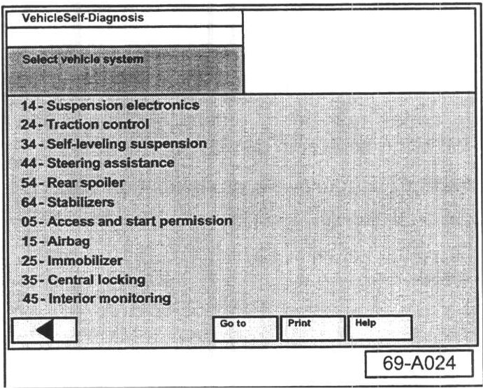
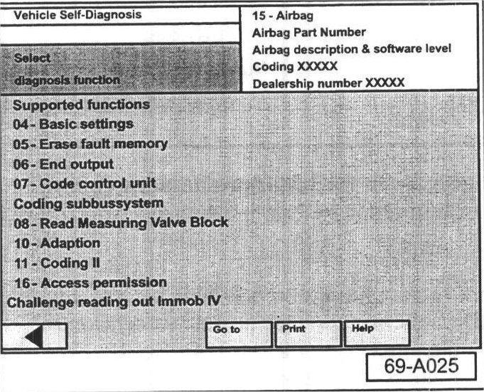
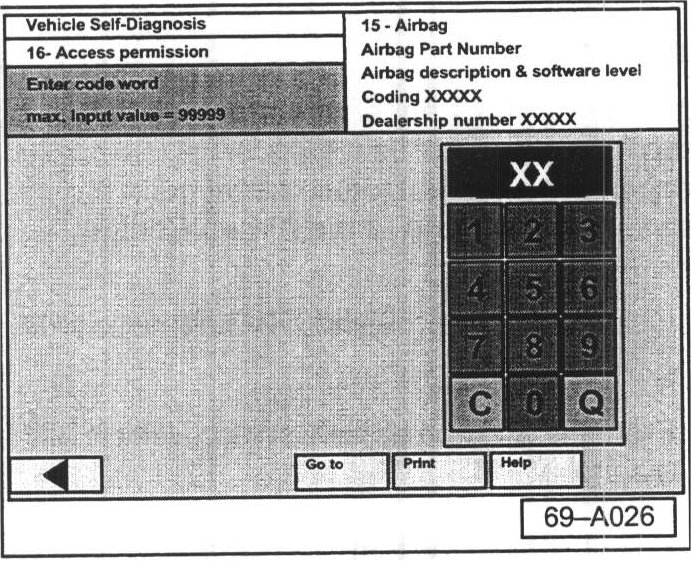
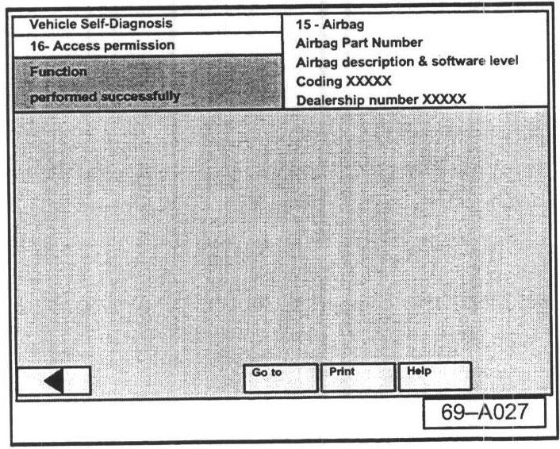
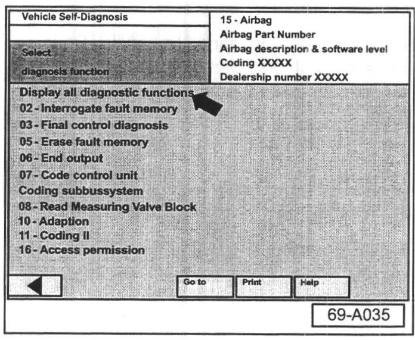
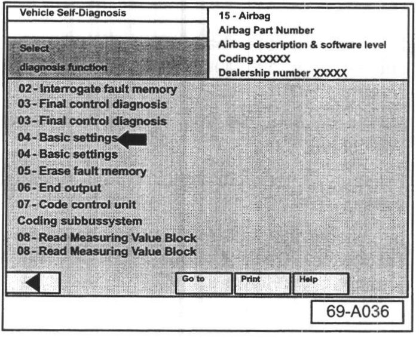
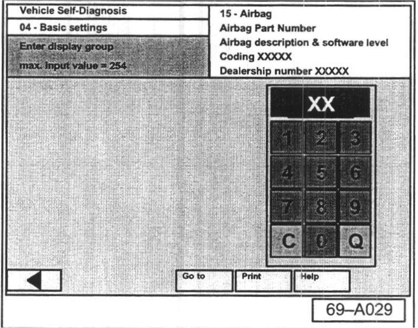
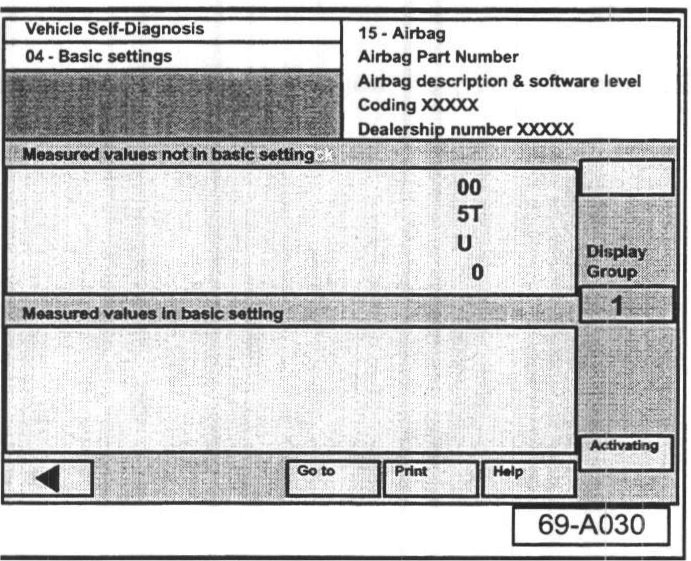
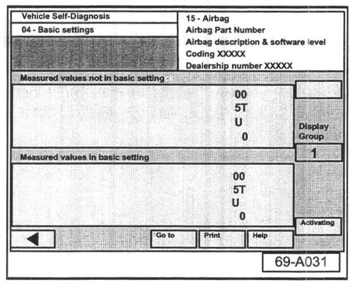

SRS - Passenger Occupant Detection System Fault
Group: 69Number: 04-03
Date: Jul. 26, 2004
Subject:
Passenger Occupant Detection System (PODS) Fault
Model(s) New Beetle Convertible & 2004
Touareg
Supersedes T.B. Group 69 number 04-01 due to changes in Self-Diagnostic sequencing. See asterisks for exact changes.
Condition
After replacement of the PODS system, the passenger seat bolster or the Airbag Control Module, fault code 02511 014 - Seat Occupied Recognition Control Module Faulty - appears.
Service
After the replacement of one of the above described items the Seat Occupied Recognition Control Module serial number has to be transferred to the Airbag Control Module.
- Connect the VAS 5051/5052 Diagnostic tool.
- Switch ignition ON.
- From the Start-up screen, select "Vehicle self diagnosis".

- Select vehicle system "15-Airbag".

- Select "16-Access Permission".

- Enter code word:
^ For New Beetle Convertible, enter 11063.
^ For Touareg, enter 30475.

^ If code has been entered correctly the following screen is displayed.
- Select back arrow <-- on navigation bar.

*- Select "Display all diagnostic functions".*

*- Select First "Basic Settings" -arrow-.*
Note:
First "Basic settings" entry -arrow- must be selected. Second "Basic settings" entry is not a functional entry.

- Enter "01" on keypad to select display group 001.

- Click on the "Activating" button in order to transfer Seat Occupied Recognition Control Module serial number into the Airbag Control Module.

- If serial number has been transferred successfully you should see the following screen.
- Select back arrow <-- on navigation bar to exit this screen.
- Erase any sporadic faults in the Airbag system.
- Interrogate the fault memory to ensure no Diagnostic Trouble Codes (DTCs) are present.